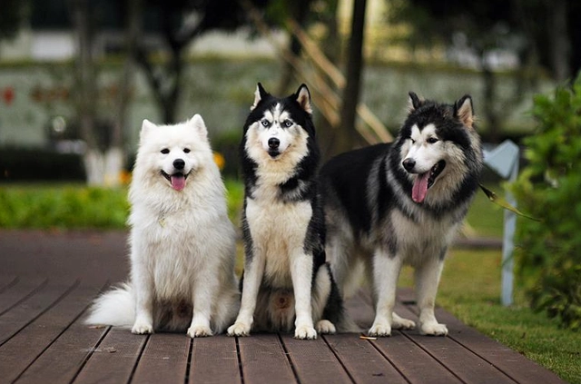

xxxx年xx月xx日 12:05 三宝大乱斗
很多人都知道阿拉斯加、萨摩耶和哈士奇，并称雪橇三傻。但很多人却不知道雪橇三傻其实还有5个雪橇兄弟，快来看看你知道吗！

这种犬最早于20世纪初在美国培育，主要用于拉雪橇，属于职业犬类的犬种。另外奇努克犬性情温和，是热爱乐趣、多才多艺的优秀家犬，但数量非常少，目前基本都在美国饲养。
这种犬最早于20世纪初在美国培育，主要用于拉雪橇，属于职业犬类的犬种。另外奇努克犬性情温和，是热爱乐趣、多才多艺的优秀家犬，但数量非常少，目前基本都在美国饲养。
这种犬最早于20世纪初在美国培育，主要用于拉雪橇，属于职业犬类的犬种。另外奇努克犬性情温和，是热爱乐趣、多才多艺的优秀家犬，但数量非常少，目前基本都在美国饲养。